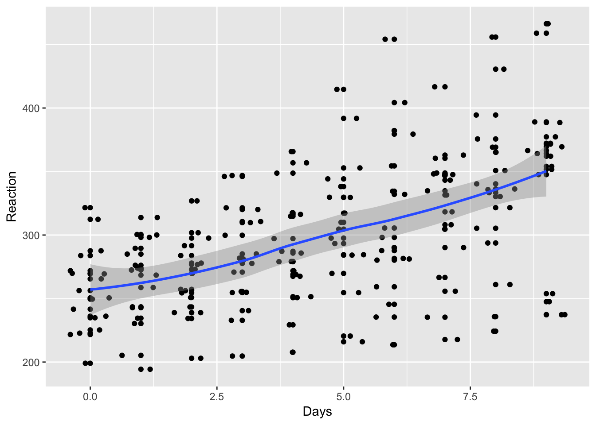
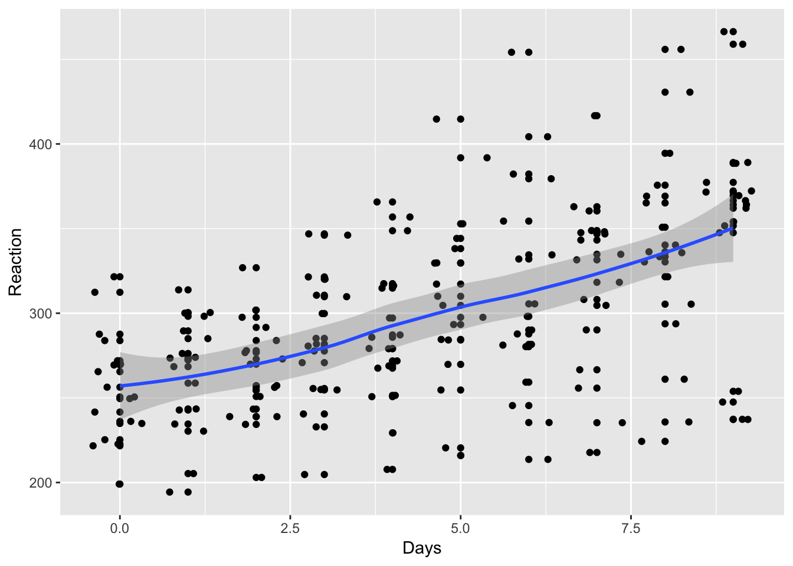
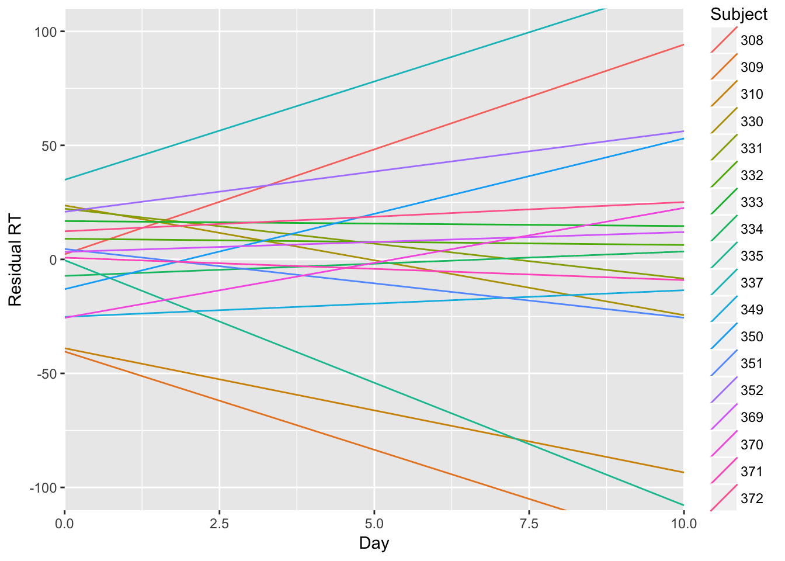

17.1 The sleepstudy data and traditional RM Anova
XXX As noted in the Anova cookbook section, repeated measures anova can be approximated using linear mixed models.
For example, using the same sleepstudy example, this model approximates a repeat measures anova in which multiple measurments of Reaction time are taken on multiple Days for each Subject:
sleep.model <- lmer(Reaction ~ factor(Days) + (1|Subject), data=lme4::sleepstudy)
lmerTest::anova(sleep.model)
## Analysis of Variance Table of type III with Satterthwaite
## approximation for degrees of freedom
## Sum Sq Mean Sq NumDF DenDF F.value Pr(>F)
## factor(Days) 166235 18471 9 153 18.703 < 2.2e-16 ***
## ---
## Signif. codes: 0 '***' 0.001 '**' 0.01 '*' 0.05 '.' 0.1 ' ' 1If you really wanted to fit traditional RM Anova, this is the ‘real thing’:
afex::aov_car(Reaction ~ Days + Error(Subject/(Days)), data=lme4::sleepstudy)
## Anova Table (Type 3 tests)
##
## Response: Reaction
## Effect df MSE F ges p.value
## 1 Days 3.32, 56.46 2676.18 18.70 *** .29 <.0001
## ---
## Signif. codes: 0 '***' 0.001 '**' 0.01 '*' 0.05 '+' 0.1 ' ' 1
##
## Sphericity correction method: GGXXX ADD THESE EXAMPLES But see the multilevel models section for details of more interesting models which:
17.1.1 Fit a simple slope for Days
lme4::sleepstudy %>%
ggplot(aes(Days, Reaction)) +
geom_point() + geom_jitter() +
geom_smooth()
## `geom_smooth()` using method = 'loess'
slope.model <- lmer(Reaction ~ Days + (1|Subject), data=lme4::sleepstudy)
lmerTest::anova(slope.model)
## Analysis of Variance Table of type III with Satterthwaite
## approximation for degrees of freedom
## Sum Sq Mean Sq NumDF DenDF F.value Pr(>F)
## Days 162703 162703 1 161 169.4 < 2.2e-16 ***
## ---
## Signif. codes: 0 '***' 0.001 '**' 0.01 '*' 0.05 '.' 0.1 ' ' 1
slope.model.summary <- summary(slope.model)
slope.model.summary$coefficients
## Estimate Std. Error df t value Pr(>|t|)
## (Intercept) 251.40510 9.7467163 22.8102 25.79383 0
## Days 10.46729 0.8042214 161.0036 13.01543 017.1.2 Allow the effect of sleep deprivation to vary for different participants
It looks like sleep deprivation hits some participants worse than others:
set.seed(1234)
lme4::sleepstudy %>%
filter(Subject %in% sample(levels(Subject), 10)) %>%
ggplot(aes(Days, Reaction, group=Subject, color=Subject)) +
geom_smooth(method="lm", se=F) +
geom_jitter(size=1) +
theme_minimal()
If we wanted to test whether there was significant variation in the effects of sleep deprivation between subjects, we could add a random slope to the model.
The random slope allows the effect of Days to vary between subjects. So we can think of an overall slope (i.e. RT goes up over the days), from which individuals deviate by some amount (e.g. a resiliant person will have a negative deviation or residual from the overall slope).
Adding the random slope doesn’t change the F test for Days that much:
random.slope.model <- lmer(Reaction ~ Days + (Days|Subject), data=lme4::sleepstudy)
lmerTest::anova(random.slope.model)
## Analysis of Variance Table of type III with Satterthwaite
## approximation for degrees of freedom
## Sum Sq Mean Sq NumDF DenDF F.value Pr(>F)
## Days 30031 30031 1 17 45.853 3.264e-06 ***
## ---
## Signif. codes: 0 '***' 0.001 '**' 0.01 '*' 0.05 '.' 0.1 ' ' 1Nor the overall slope coefficient:
random.slope.model.summary <- summary(random.slope.model)
slope.model.summary$coefficients
## Estimate Std. Error df t value Pr(>|t|)
## (Intercept) 251.40510 9.7467163 22.8102 25.79383 0
## Days 10.46729 0.8042214 161.0036 13.01543 0But we can use the lmerTest::rand() function to show that there is statistically significant variation in slopes between individuals, using the likelihood ratio test:
lmerTest::rand(random.slope.model)
## Analysis of Random effects Table:
## Chi.sq Chi.DF p.value
## Days:Subject 42.8 2 5e-10 ***
## ---
## Signif. codes: 0 '***' 0.001 '**' 0.01 '*' 0.05 '.' 0.1 ' ' 1Because the random slope for Days is statistically significant, we know it improves the model. One way to see that improvement is to plot residuals (unexplained error for each datapoint) against predicted values. To extract residual and fitted values we use the residuals() and predict() functions. These are then combined in a data_frame, to enable us to use ggplot for the subsequent figures.
# create data frames containing residuals and fitted
# values for each model we ran above
a <- data_frame(
model = "random.slope",
fitted = predict(random.slope.model),
residual = residuals(random.slope.model))
b <- data_frame(
model = "random.intercept",
fitted = predict(slope.model),
residual = residuals(slope.model))
# join the two data frames together
residual.fitted.data <- bind_rows(a,b)We can see that the residuals from the random slope model are much more evenly distributed across the range of fitted values, which suggests that the assumption of homogeneity of variance is met in the random slope model:
# plots residuals against fitted values for each model
residual.fitted.data %>%
ggplot(aes(fitted, residual)) +
geom_point() +
geom_smooth(se=F) +
facet_wrap(~model)
## `geom_smooth()` using method = 'loess'
We can plot both of the random effects from this model (intercept and slope) to see how much the model expects individuals to deviate from the overall (mean) slope.
# extract the random effects from the model (intercept and slope)
ranef(random.slope.model)$Subject %>%
# implicitly convert them to a dataframe and add a column with the subject number
rownames_to_column(var="Subject") %>%
# plot the intercept and slobe values with geom_abline()
ggplot(aes()) +
geom_abline(aes(intercept=`(Intercept)`, slope=Days, color=Subject)) +
# add axis label
xlab("Day") + ylab("Residual RT") +
# set the scale of the plot to something sensible
scale_x_continuous(limits=c(0,10), expand=c(0,0)) +
scale_y_continuous(limits=c(-100, 100)) 
Inspecting this plot, there doesn’t seem to be any strong correlation between the RT value at which an individual starts (their intercept residual) and the slope describing how they change over the days compared with the average slope (their slope residual).
That is, we can’t say that knowing whether a person has fast or slow RTs at the start of the study gives us a clue about what will happen to them after they are sleep deprived: some people start slow and get faster; other start fast but suffer and get slower.
However we can explicitly check this correlation (between individuals’ intercept and slope residuals) using the VarCorr() function:
VarCorr(random.slope.model)
## Groups Name Std.Dev. Corr
## Subject (Intercept) 24.7404
## Days 5.9221 0.066
## Residual 25.5918The correlation between the random intercept and slopes is only 0.066, and so very low. We might, therefore, want to try fitting a model without this correlation. lmer includes the correlation by default, so we need to change the model formula to make it clear we don’t want it:
uncorrelated.reffs.model <- lmer(
Reaction ~ Days + (1 | Subject) + (0 + Days|Subject),
data=lme4::sleepstudy)
VarCorr(uncorrelated.reffs.model)
## Groups Name Std.Dev.
## Subject (Intercept) 25.0513
## Subject.1 Days 5.9882
## Residual 25.5653The variance components don’t change much when we constrain the covariance of intercepts and slopes to be zero, and we can explicitly compare these two models using the anova() function, which is somewhat confusingly named because in this instance it is performing a likelihood ratio test to compare the two models:
anova(random.slope.model, uncorrelated.reffs.model)
## refitting model(s) with ML (instead of REML)
## Data: lme4::sleepstudy
## Models:
## ..1: Reaction ~ Days + (1 | Subject) + (0 + Days | Subject)
## object: Reaction ~ Days + (Days | Subject)
## Df AIC BIC logLik deviance Chisq Chi Df Pr(>Chisq)
## ..1 5 1762.0 1778.0 -876.00 1752.0
## object 6 1763.9 1783.1 -875.97 1751.9 0.0639 1 0.8004Model fit is not significantly worse with the constrained model, so for parsimony’s sake we prefer it to the more complex model.
17.1.3 Fitting a curve for the effect of Days
In theory, we could also fit additional parameters for the effect of Days, although a combined smoothed line plot/scatterplot indicates that a linear function fits the data reasonably well.
lme4::sleepstudy %>%
ggplot(aes(Days, Reaction)) +
geom_point() + geom_jitter() +
geom_smooth()
## `geom_smooth()` using method = 'loess'
If we insisted on testing a curved (quadratic) function of Days, we could:
quad.model <- lmer(Reaction ~ Days + I(Days^2) + (1|Subject), data=lme4::sleepstudy)
quad.model.summary <- summary(quad.model)
quad.model.summary$coefficients
## Estimate Std. Error df t value Pr(>|t|)
## (Intercept) 255.4493728 10.4656310 30.04063 24.408406 0.00000000
## Days 7.4340850 2.9707978 160.00374 2.502387 0.01334034
## I(Days^2) 0.3370223 0.3177733 160.00374 1.060575 0.29048148Here, the p value for I(Days^2) is not significant, suggesting (as does the plot) that a simple slope model is sufficient.